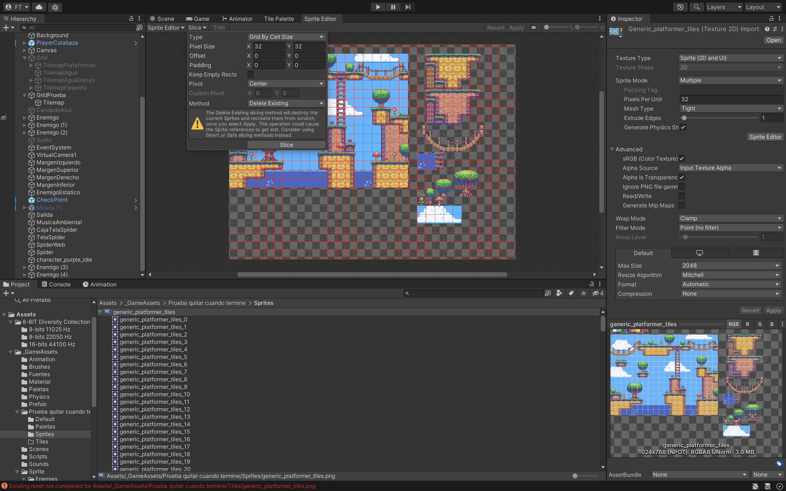
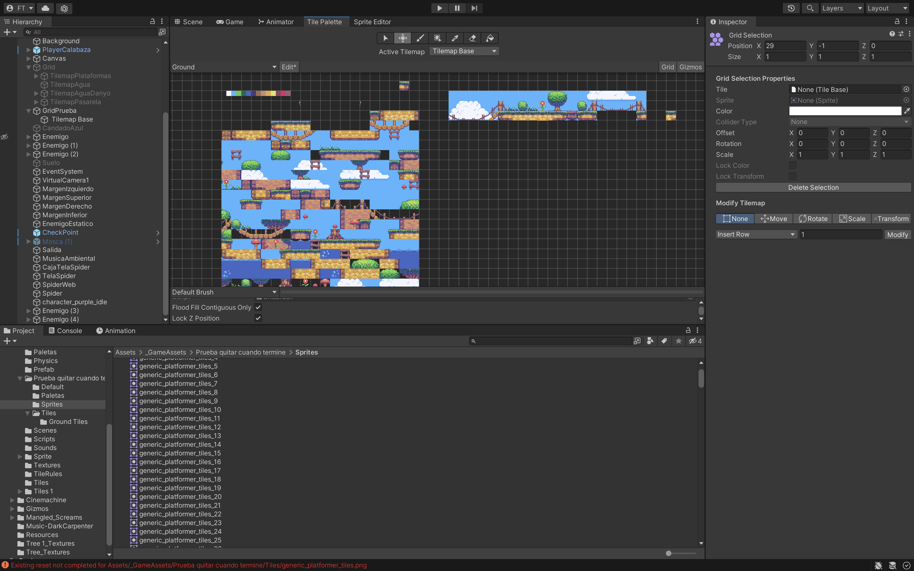
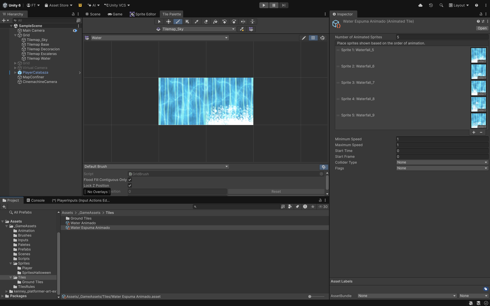
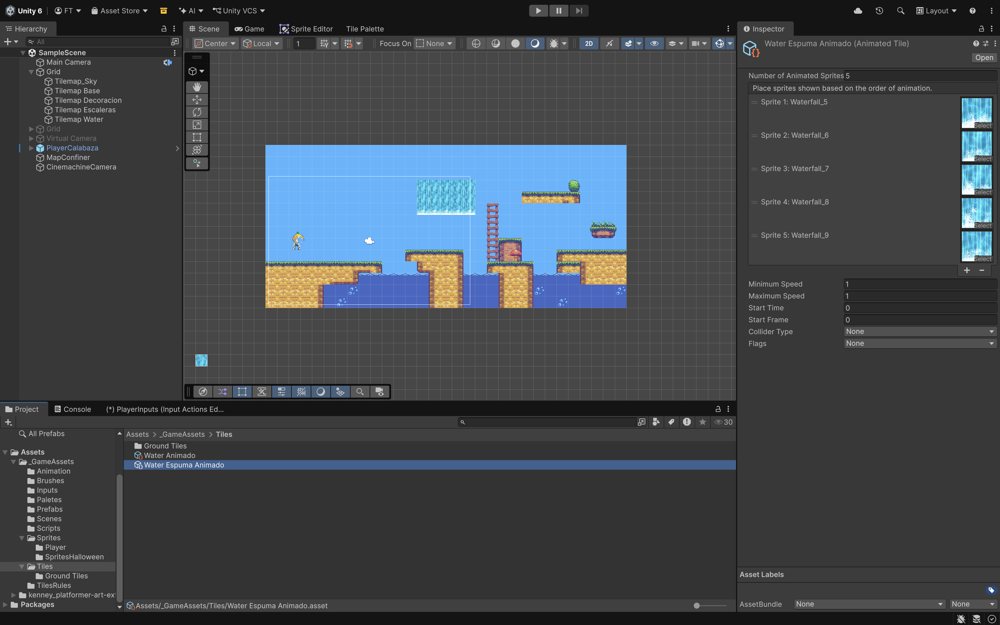
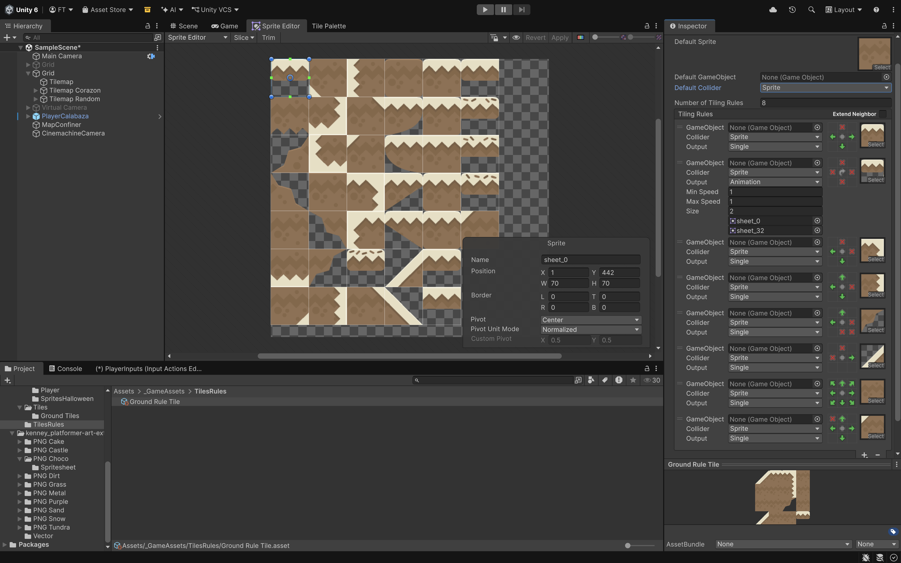
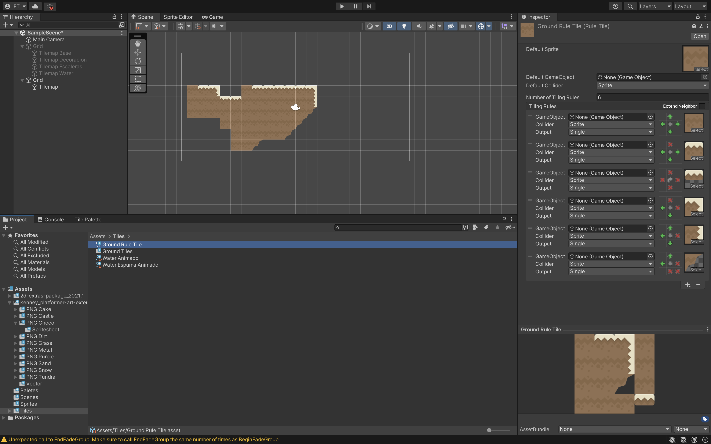

Los TileMap son un sistema potente para diseñar escenarios 2D utilizando una cuadrícula (Grid) y pequeños
gráficos repetibles llamados mosaicos (tiles). Permiten pintar niveles rápidamente, optimizan el rendimiento
al agrupar objetos y son ideales para juegos indies o de plataformas, ahorrando memoria y tiempo.
Para poder descargar unos extras tenemos que hacer lo siguiente:
• Instalar el Git desde https://github.com/Unity-Technologies/2d-extras seleccionando el branche de
la versión que estamos trabajando y descargar el zip:
• Descomprimir el Zip.
• Crear dentro de Packages un directorio: com.unity.2d.tilemap.extras.
• Guardar todos los archivos descomprimidos en ese directorio.
• Volver arrancar el Editor de Unity y ya nos aparecera dentro de Create/2D/Brushes las distintas
opciones.
En _GameAssets crear carpetas:
• Brushes.
• Paletas.
• Sprites.
• TileRules.
• Tiles. Crearemos una subcarpeta dependiendo de los mapas que tengamos.
o Ground Tiles.
Descargar un .png (carpeta Sprite) que sea un hoja (sheet) que contenga muchas tiles y en el abrir ventana
de Sprite Editor para trocearlo.

Crear un Mapa: GO 2D TileMap/Rectangular (Grid). La renombramos a Tilemap_Base.
Crear una la Paleta así que abrimos la Ventana Editor de Window/Tile Palette y que se llame Ground
(carpeta Paletas).
Una paleta es una colección de mosaicos.
Habría que arrastrar todos los mosaicos que se han creado al hacer el Apply que están dentro de Sprites.
• Con Shift selecciono el primero me voy al final y selecciono el último y los arrastro a mi paleta
(Tile Palette).
• Y lo guardamos dentro de Tiles/Ground Tiles y se importaran todos los mosaicos.
• Si esta desordenado habría que recolocarlo manualmente.

Para recolocarlos o para generar nuestro mapa usaremos la barra de herramientas que esta en el Tile Palette:
• Edit tiene que estar seleccionado.
• Seleccionar (botón 1) y seleccionar el mosaico o grupo de mosaicos.
• Seleccionar mover (botón 2) y arrastrar el mosaico o grupo de mosaicos seleccionado anteriormente
hasta la posición que queramos.
Para poder pintar en la escena habrá que tener seleccionado el Tilemap_Base y seleccionar el pincel. El
Modo Edit tiene que estar desactivado.
Herramienta de Cuentagotas (5) para obtener tiles modificados a partir de los que ya están en la paleta.
• Edit activado.
• Seleccionar el Cuentagotas un tiles y lo pongo en otra posición de la paleta.
• Puedo seleccionar el nuevo tile y cambiar su escala en x a -1.
• Apply.
Podemos crear todos los mapas que queramos y mediante el Sorting Layer y/o el Order Layer del inspector del Tilemap podemos poner en que orden están. Si ponemos 0 es el más profundo.
Se puede usar Assets/Create/2D/Sprites Atlas para empaquetar todos los Sprites que necesitemos y que el rendimiento mejore.
Crear un Tilemap Water con Waterfall.png (o con cualquier otro). Trocear el png a 64 pixels.
En la carpeta Tiles: Create 2D/Tiles/Animated Tiled llamado Water Animado. Añadir los sprites que hemos separado
anteriormente.
Crear una Paleta Water y arrastrar el Water Animado.
Hacer otro que sea la espuma.


https://kenney.nl/assets/platformer-art-extended-tileset o cualquier otro asset. Hay que trocearlo en el
Sprite Editor.
Crear dentro de la carpeta de TilesRules un Rule Tile llamada Ground Rule Tile. Tendremos que ir añadiendo
los Sprites dando al “+”.
En la Ground Rule Tile ponemos por defecto una pieza central sheet_24 y añadimos está a la primera regla.

Condición:
• Una flecha verde indica que debe haber otra casilla adyacente.
• Una roja significa que no debe haber nada.
La pequeña protuberancia en el centro representa la posición de esta ficha actual.
Crear una nueva paleta llamada Rule y arrastrar Ground Rule Tile para poder ir dibujando.
También se pueden hacer diagonales.

Output:
• Random para poner un aleatorio de sprites.
o Noise cambiara el factor aleatorio entre los sprites.
o Shuffle Podemos hacer que las baldosas giren aleatoriamente o en el eje X, Y o de ambos.
• Animation baldosas animadas en ejecución.
Si queremos que las Tiles tengan colisionadores:
• Añadir un componente “Tilemap Collider 2D”.
• Un “Composite Collider 2D”.
¿Que ha pasado cuando ejecutais?. Se ha incluido algún otro componente automáticamente?
Podemos hacer coleccionables a la escena para que el jugador los recoja. Se pueden hacer prefab como
siempre, pero esto es lento e impreciso. Gracias al paquete de 2D Extras que descargamos podemos hacerlo
mediante un mosaico y pintar sobre nuestro mapa de mosaicos.
• Crear un prefab Corazon.
• Crear TileMap Corazon.
• Crear Prefab Brush desde Project Create/2D/Brushes/Prefab Brush.
o Lo llamaremos Corazon Brush y lo guardamos en una carpeta de Brushes.
• Y le añadimos el prefab Corazon al Corazon Brush.
• Seleccionar en Tile Palette el Brush de Corazon Brush que aparece en la lista y lo pintamos en
la escena.
Acordarse de tener seleccionado el TileMap sobre el que queremos pintar en Hierarchy.
También podemos hacer Prefab Random Brush y poner varios Prefab para que a la hora de dibujar salga
aleatorio.
A estos prefabs se le pueden añadir animaciones para que se muevan en Vertical, Horizontal, Inclinadas
que tengan un material físico para que se deslice y no tenga friccion…… Otra que se deslice si la
tocamos por debajo mediante una animación y aparezca un coleccionable (tipo bloque moneda del Mario Bross)
Los Efectores en las Tiles son una colección de componentes y se va a generar una fuerza física se
pueden poner tanto en Prefabs fuera de las TileMaps como prefabs dentro del TileMaps ó en el propio TileMap:
• PlatformEffector salta por debajo de la plataforma y se atraviesa.
• SurfaceEffector2D es una cinta deslizadora se marca la velocidad y el sentido, te transporta.
• PointEffector2D te atrae o repele los objetos.
• BouyancyEffector2D para que algo flote si tuviéramos una zona de agua.
• AreaEffector2D varia aleatoriamente la fuerza y la magnitud del ángulo.
¿Cómo pondríais un componente de Efector Bouynacy Effects2D en un TileMap Agua?.